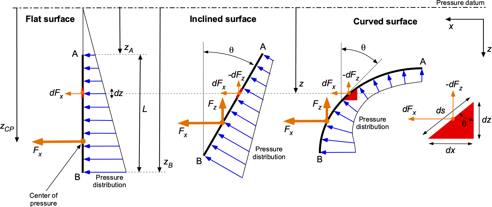
2025 · ffer@build.aau.dk
The pressure at a point in a fluid at rest, or in motion, is independent of direction as long as there are no shearing stresses.
no-shear \(\rightarrow\) only gravity and pressure force
we consider a small triangular wedge of fluid from any location within the fluid
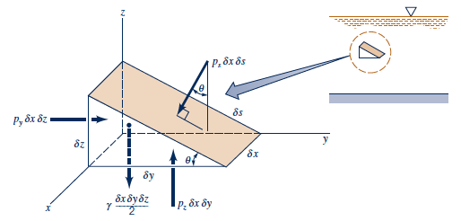
Applying Newton's second law on the wedge:
Pressure is isotropic at a point in a static fluid.
isotropic: physical property that is independent of direction
The pressure at a point in a fluid at rest, or in motion, is independent of direction as long as there are no shearing stresses.
no-shear \(\rightarrow\) only gravity and pressure force
no-shear \(\rightarrow\) acceleration can be non-zero if fluid move as a rigid body
From Newton's second law (\(F = ma \)), the equation of motion can be expressed in the y and z directions as:
$$\sum F_{y} = p_{y} \delta x \delta z - p_s sin(\theta)\delta x \delta s = \rho\frac{\delta x \delta y \delta z}{2} a_{y}$$
$$\sum F_{z} = p_{z} \delta x \delta y - p_s cos(\theta)\delta x \delta s - \gamma \frac{\delta x \delta y \delta z}{2}= \rho\frac{\delta x \delta y \delta z}{2} a_{z}$$
$$^1 \gamma = \rho g \rightarrow \text{specific weight}$$
The pressure at a point in a fluid at rest, or in motion, is independent of direction as long as there are no shearing stresses.
$$\sum F_{y} = p_{y} \delta x \delta z - p_s sin(\theta)\delta x \delta s = \rho\frac{\delta x \delta y \delta z}{2} a_{y}$$
$$\sum F_{z} = p_{z} \delta x \delta y - p_s cos(\theta)\delta x \delta s - \gamma \frac{\delta x \delta y \delta z}{2}= \rho\frac{\delta x \delta y \delta z}{2} a_{z}$$
$$\delta_y = \delta_s cos(\theta), \delta_z = \delta_s sin(\theta)$$
$$(p_{y} - p_s) \delta x \delta z= \rho\frac{\delta y}{2} a_{y} \delta x \delta z$$
$$(p_{z} - p_s) \delta x \delta y= (\rho a_{z}+\gamma) \frac{\delta z}{2} \delta x \delta y$$
In the limit of \(\delta x, \delta y, \delta z \to 0\) it follows that
How does the pressure field in a fluid without shearing stresses vary?
we consider a small rectangular volume of fluid from any location within the fluid
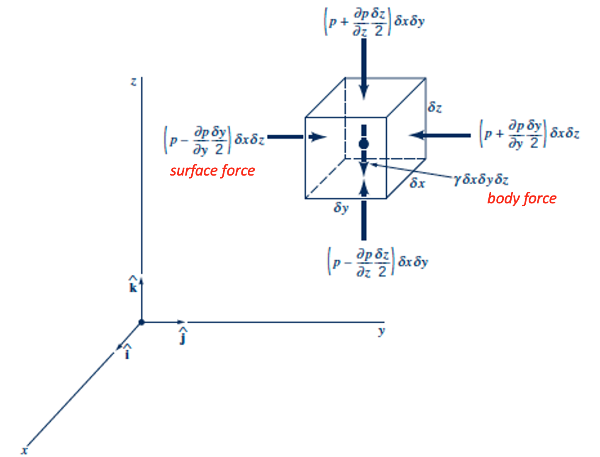
no-shear \(\rightarrow\) only gravity (body) and pressure (surface) force
Using Newton's second law on the volume of fluid, we obtaine:
The pressure at the point (\(y-\delta y/2\)) can be approximated using a Taylor expansion as:
$$p(y-\delta y/2) = p(y) - \frac{\partial p}{\partial y} \frac{\delta y}{2}$$
$$ P(x+\Delta x) = P(x) + \frac{\partial P}{\partial x} \Delta x + \frac{1}{2} \frac{\partial^2 P}{\partial x^2} (\Delta x)^2 + ... $$
$$ P(x+\Delta x) \approx P(x) + \frac{\partial P}{\partial x} \Delta x $$
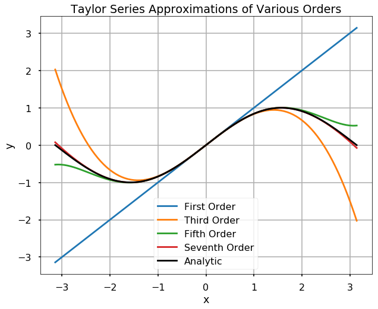
Surface force summation at a generic point y, along the y-axis:
$$ \delta F_y = \left(p(y-\delta y/2) - p(y+\delta y/2)\right)\delta A $$
$$ = \left(p-\frac{\partial p}{\partial y} \frac{\delta y}{2}\right) \delta z \delta x - \left(p+\frac{\partial p}{\partial y} \frac{\delta y}{2}\right) \delta z \delta x $$
simplified to:
$$ \delta F_y = - \frac{\partial p}{\partial y} \delta y \delta z \delta x $$
Apply this result in all the directions and the resultant surface force acting on the element can be expressed as:
$$ \delta \bold{F}_s = \left( - \frac{\partial p}{\partial x} \bold{i} - \frac{\partial p}{\partial y} \bold{j} - \frac{\partial p}{\partial z} \bold{k} \right) \delta x \delta y \delta z = -\nabla p^{(1)} ~ \delta x \delta y \delta z $$
.
$$^1 \left( - \frac{\partial p}{\partial x} \bold{i} - \frac{\partial p}{\partial y} \bold{j} - \frac{\partial p}{\partial z} \bold{k} \right) = -\nabla p $$
$$ \text{Gradient operator:} \nabla() = \frac{\partial}{\partial x} \bold{i} + \frac{\partial}{\partial y} \bold{j} + \frac{\partial}{\partial z} \bold{k} $$
The only body force acting on the fluid element is it own weight, applied in the negative z-direction.
$$ - \delta W \bold{k} = -\gamma ~ \delta x \delta y \delta z \bold{k} $$
Using Newton's second law on the volume.
$$ \sum \delta \bold{F} = \delta \bold{F}_s - \delta W \bold{k} = \delta m \bold{a} $$
or: $$ -\nabla p ~ \delta x \delta y \delta z - \gamma ~ \delta x \delta y \delta z \bold{k} = \rho ~ \delta x \delta y \delta z \bold{a} \leftrightarrow -\nabla p - \gamma \bold{k} = \rho \bold{a} $$
If the fluid is at rest, then \(\bold{a} = 0\), and the equation simplifies to:
Hydro = water · statikos = static
No relative motion between particles; only gravity and external forces act on the fluid.
For incompressible fluid.
$$\int_{p_1}^{p_2} dp = -\gamma \int_{z_1}^{z_2} dz$$
The hydrostatic pressure distribution is linear with depth. At any depth the pressure can be evaluated as:
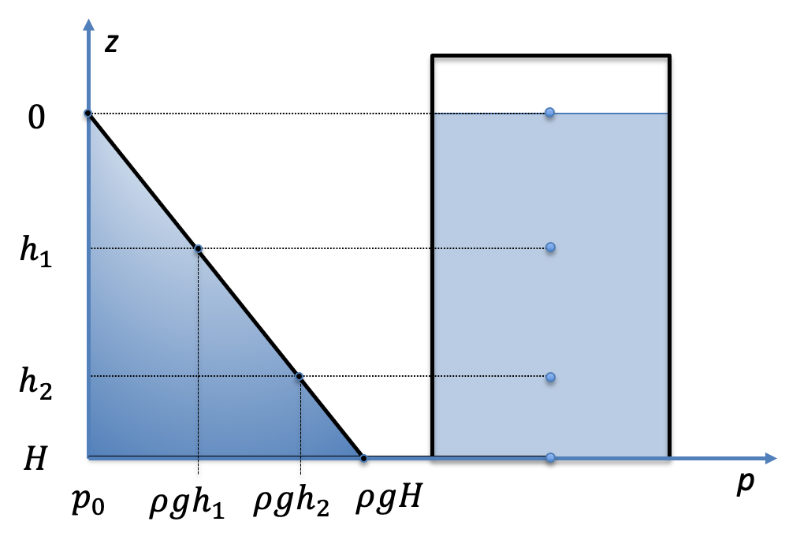
In a static fluid the pressure is isotropic and only vertical gradient exists.
For compressible fluids in isothermal conditions:
$\frac{dp}{dz} = -\rho g \rightarrow \ln(p) = -\frac{g}{RT} z + C \rightarrow p(t) = p_0 e^{-\frac{g}{RT} z}$
ideal gas: $p = \rho R T$
If \(T\) varies with \(z\), the integral needs to be solved based on the function \(T(z)\).
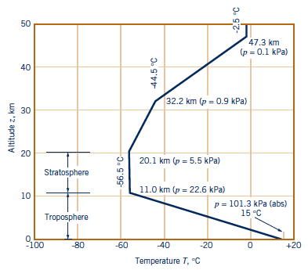
Different fluids can be selected depending on the expected pressure value, e.g. mercury, water or oil.
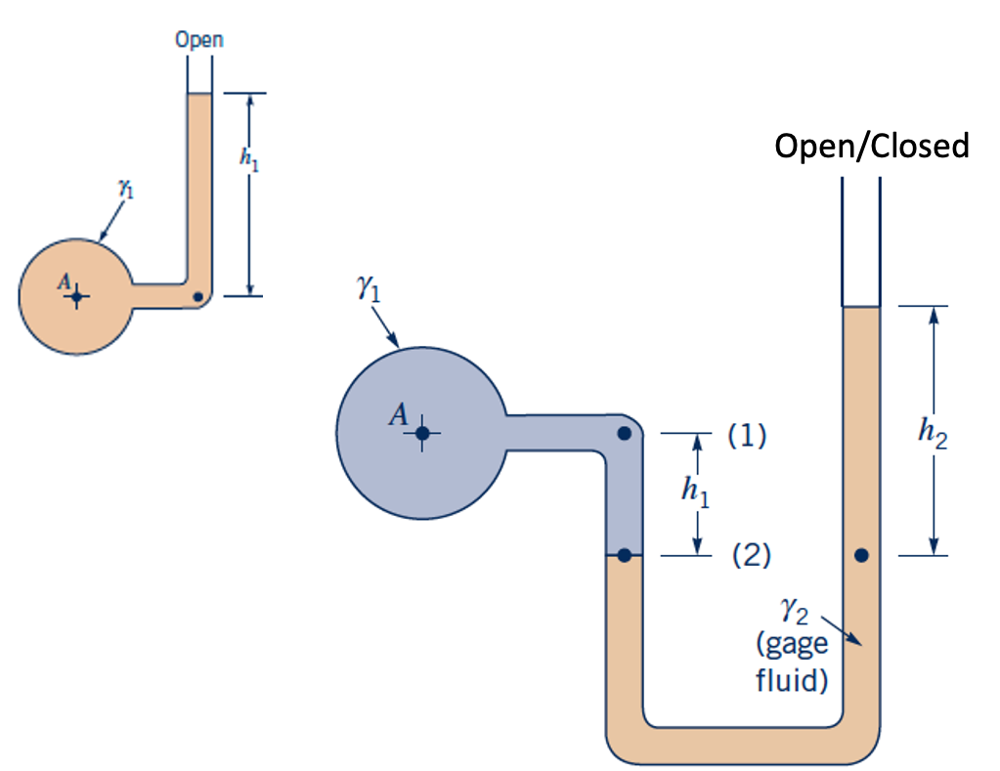
Piezometer tube, U-tube and inclined types (absolute or gauge).
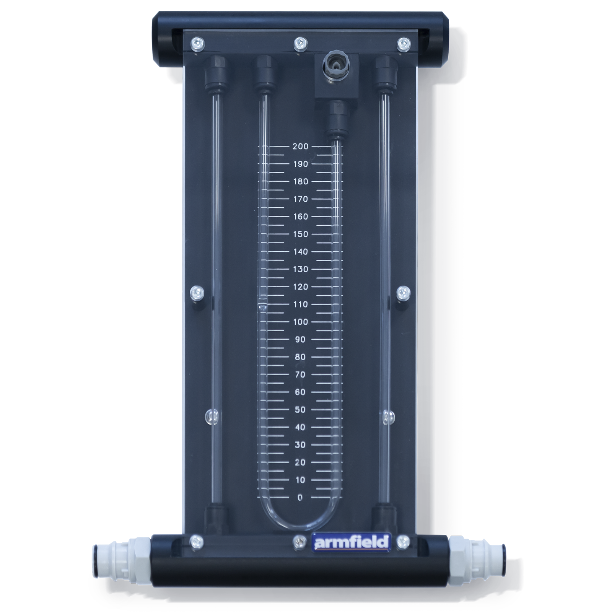
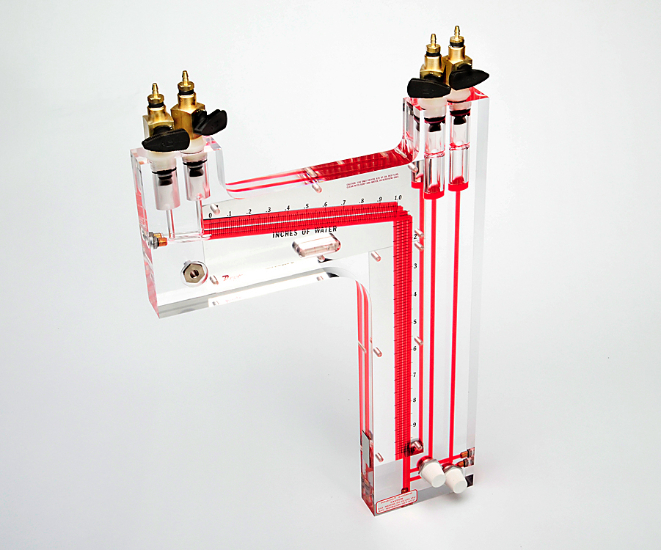
$$p_{atm} = 760mmHg = 101325Pa \approx 10.33mH_20$$
Aneroid: uses mechanical leverage to amplify elastic deformation of a membrane.
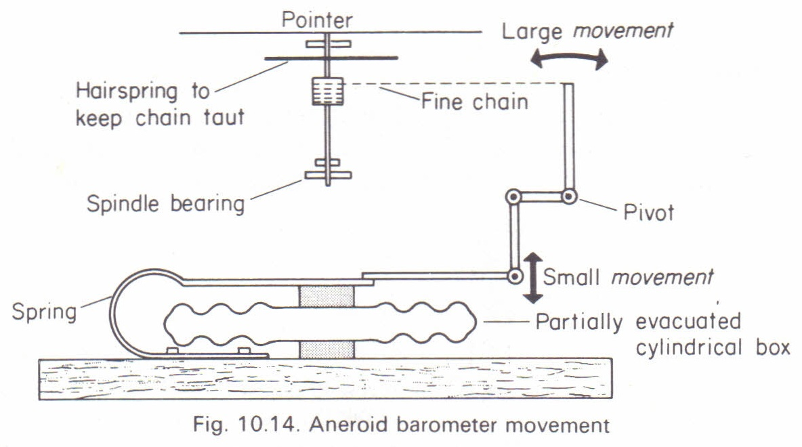
Bourdon gauge: measures deformation of a C-shaped pipe with an oval section.
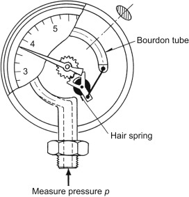
Analogue voltage signal associated with deformation of strain gauges or a piezoelectric element.
Calibration is needed to relate voltage to pressure.
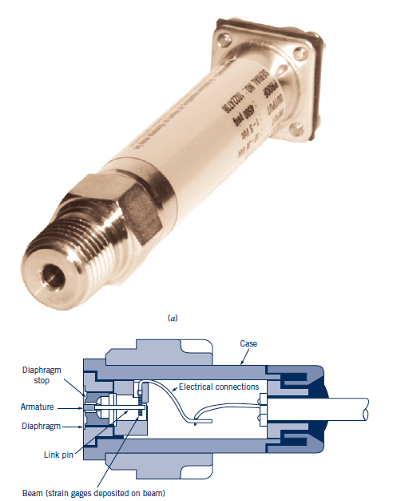
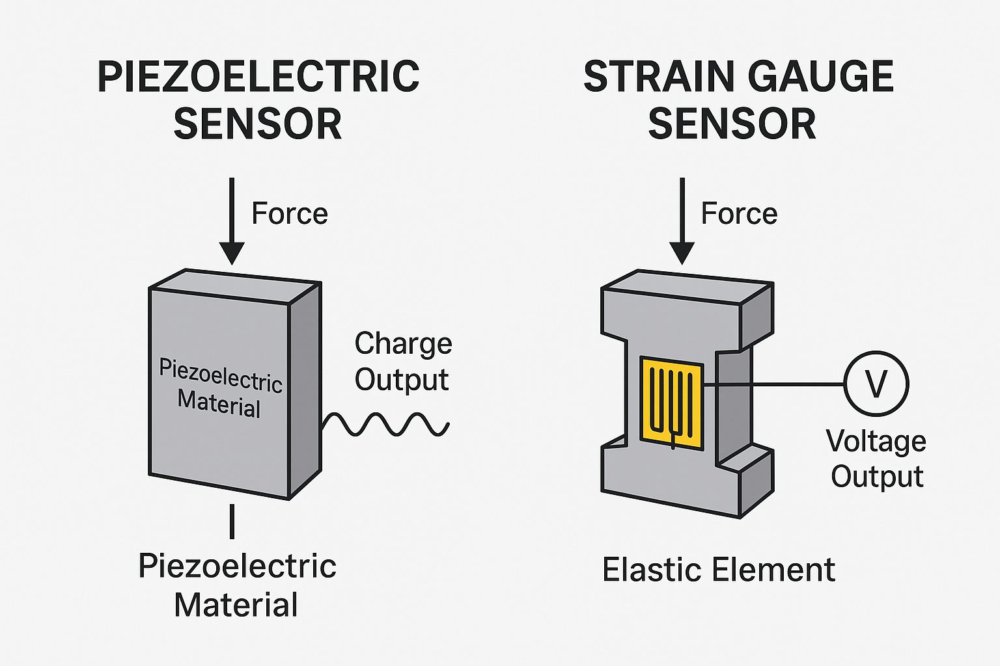
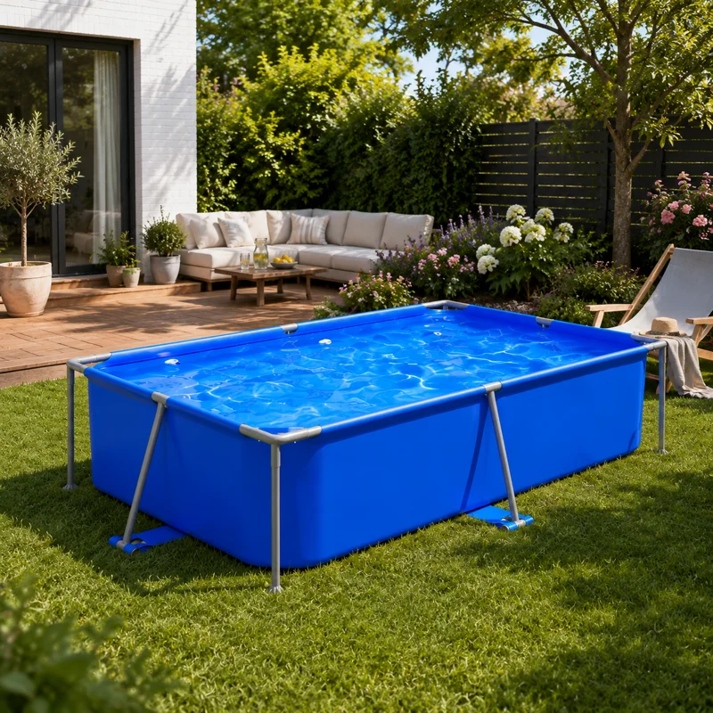
For a plane area in a constant-density static liquid:
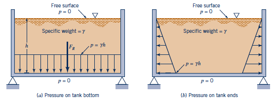
$$F_R=\int_A p\,dA=\int_A \rho g z \,dA$$
\(h_c\) is the vertical depth of the area centroid.
Assumptions: gauge pressure at a free surface open to atmosphere, constant density, plane area.
If we have a rigid wall, the hydrostatic force acts at the center of pressure. Where is the center of pressure located?
The center of pressure can be interpreted as the pressure-weighted average depth of the surface. $$h_p = \frac{\int_A p(h) h \,dA}{\int_A p(h) \,dA} = \frac{\text{moment of pressure distribution}}{\text{total pressure force}}$$
For a rectangle: \(I_G = bH^3/12\). Where is the center of pressure located?
An important consequence of the hydrostatic pressure distribution is the buoyant force.
An object fully or partially immersed in a fluid is subject to a vertical force due to the variation of the hydrostatic pressure field.
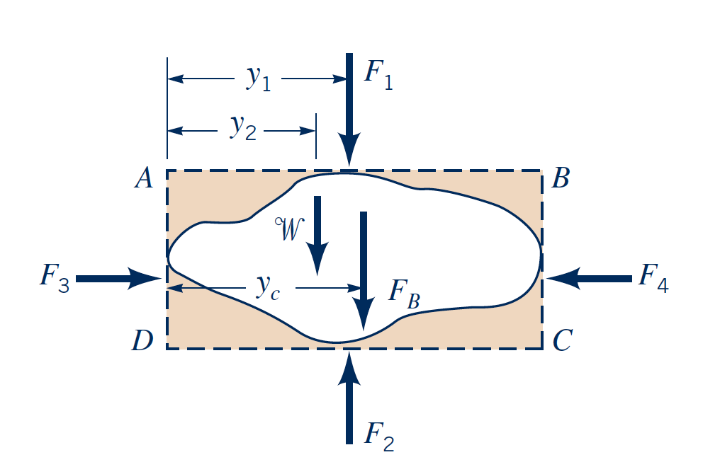
Consider a parallelepiped of water and an arbitrary object (with volume V) inside the parallelepiped.
If the object is in equilibrium and we apply Newton's second law:
$$\text{z-axis: }\sum F = ma = 0\rightarrow F_B = F_2 - F_1 -W$$
the hydrostatic contribution can be defined as:
$$F_2 - F_1 = \gamma A (h_2-h_1)$$
the weight of the fluid around the body, can be defined as:
$$W = \gamma [(h_2-h_1)A - V]$$
$$F_B = \rho gV$$
The buoyant force on a fully submerged object is equal to the weight of the displaced fluid and is directed upwards.
A fundamental concept associated with the buoyancy is stability.
A floating body is stable if, when displaced, it returns to its equilibrium position.
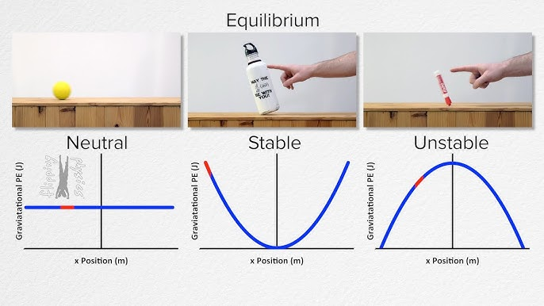
When a floating body is displaced from its equilibrium position, the buoyant force and the weight of the body create a restoring moment if the body is stable.
CG: center of gravity of the object.
C: center of buoyancy, the centroid of the submerged volume.
\(F_B\) is applied at C (C'), while \(W\) is applied at CG.
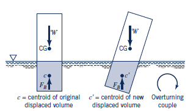
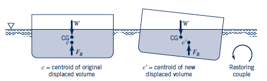
At equilibrium CG must be aligned with C.
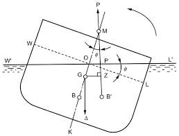
G: center of gravity of object.
B: center of buoyancy, centroid of submerged volume.
B': center of buoyancy after displacement.
M: metacenter, intersection of the line of action of \(F_B\) through B' with the line through passing through G and B.
Metacentric height: \(GM = B'M - BG\)
The larger the metacentric height, the stiffer is the object (design choice)
G: center of gravity of object.
B: center of buoyancy, centroid of submerged volume.
B': center of buoyancy after displacement.
M: metacenter, intersection of the line of action of \(F_B\) through B' with the line through passing through G and B.
Metacentric height: \(GM = B'M - BG\)
\(B'M\), the metacentric radius, can be calculated as \(I/V\), where \(I\) is the second moment of area of the waterplane about the axis of rotation \(y\), and \(V\) is the displaced volume.
$$I = \int_{A} y^2 dA$$